规定初始像素覆盖已通过独立数据验收，完整12步与物理安全未通过。Prescribed initial pixel coverage passes the independent DATA audit; full12-step and physical acceptance remain incomplete. Original1280×720; no edits/crop. Every image below is INITIAL, not micro1/final.
{"seed": 0, "proposal_id": 2609, "global_id": 8753, "family": 1}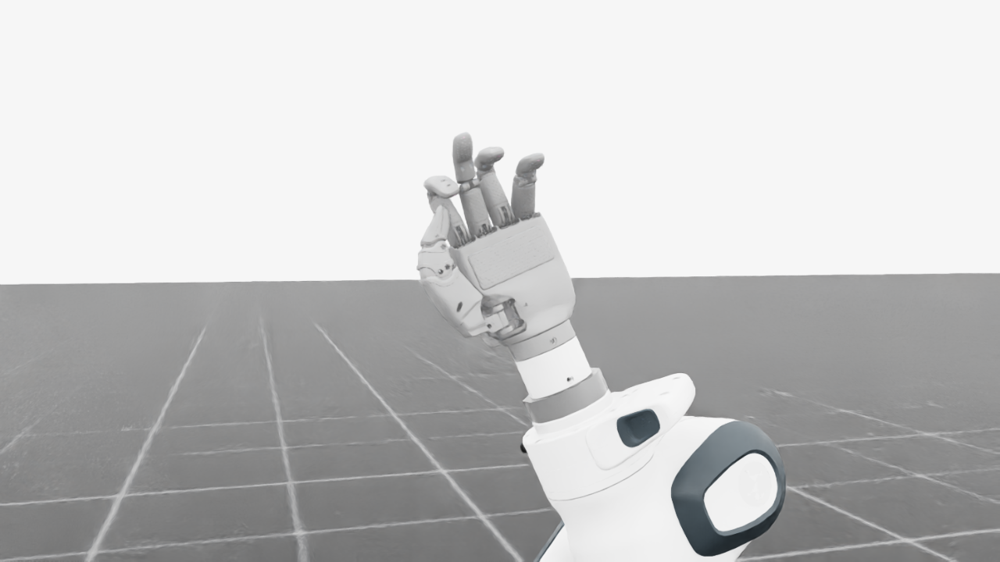
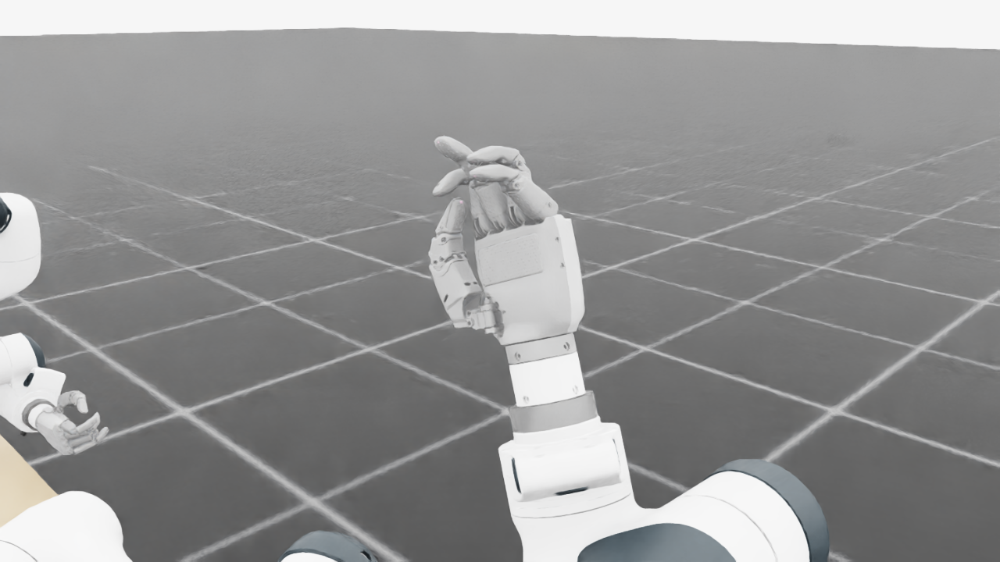
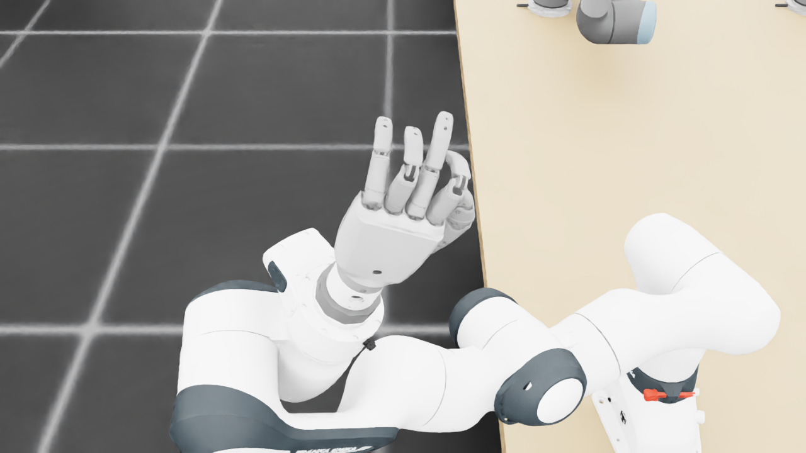
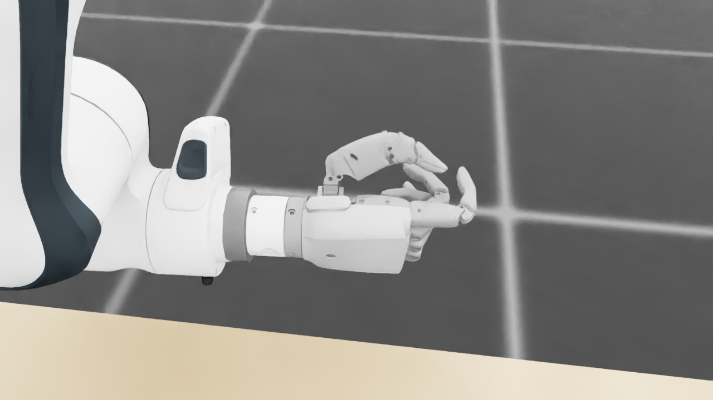
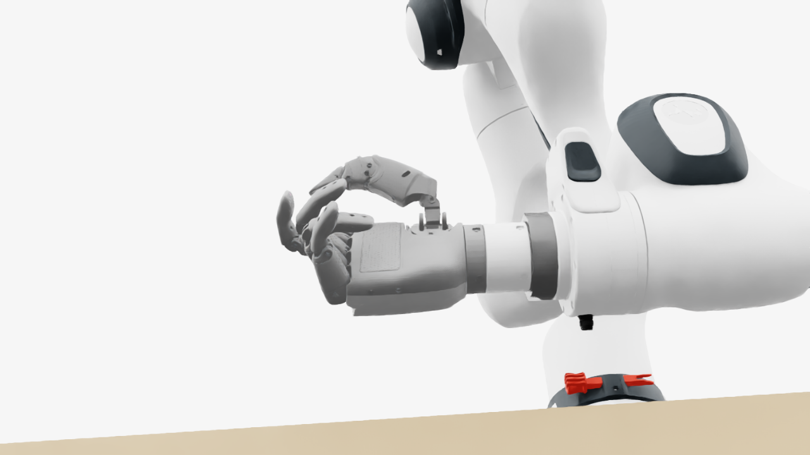
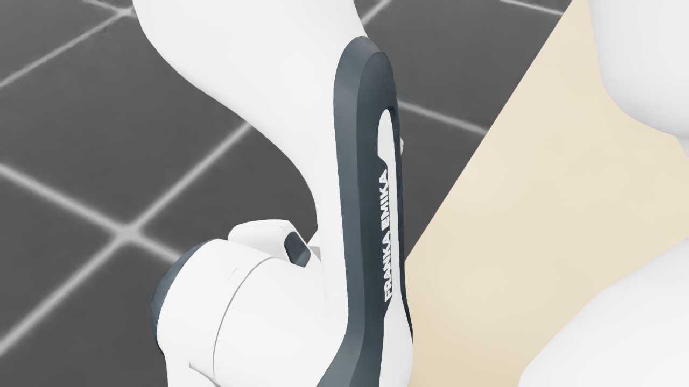
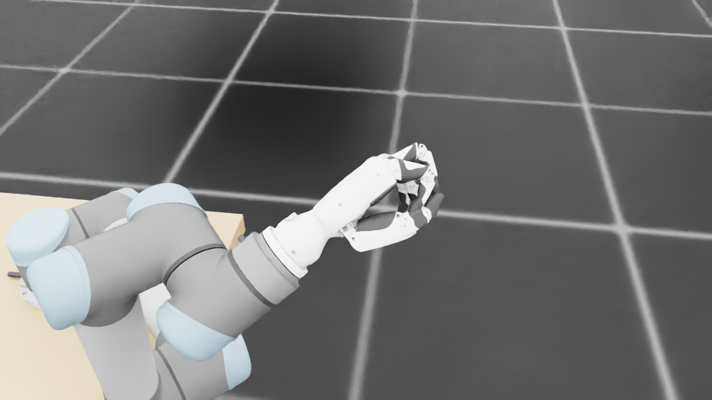
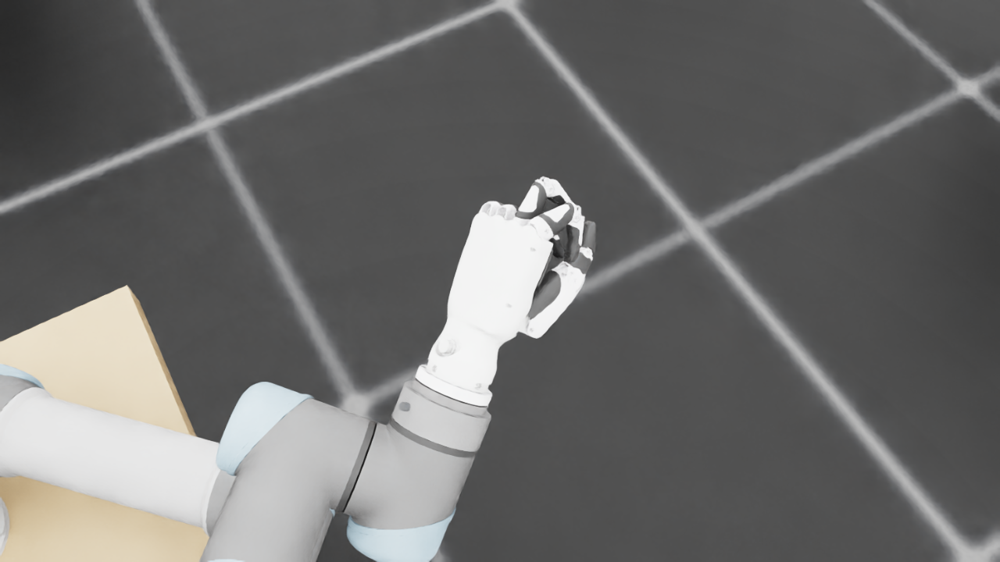
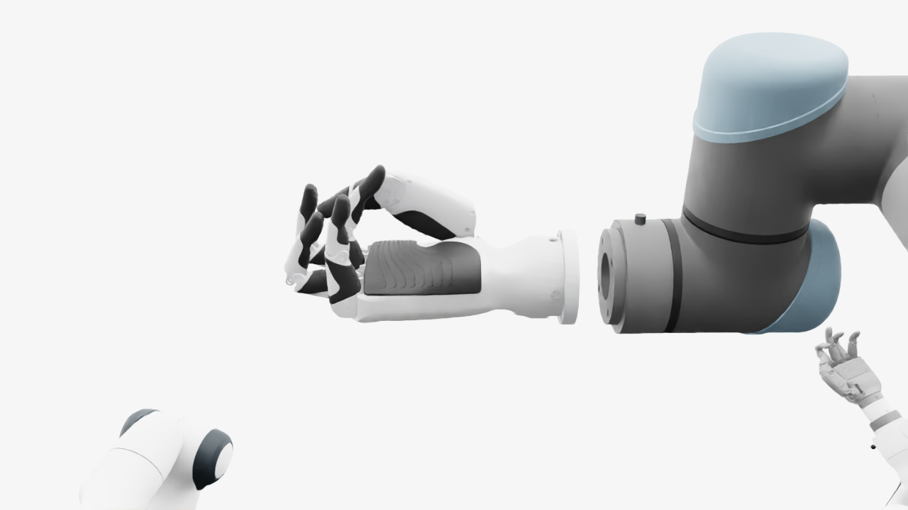
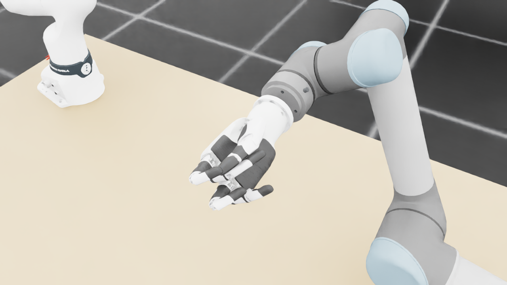
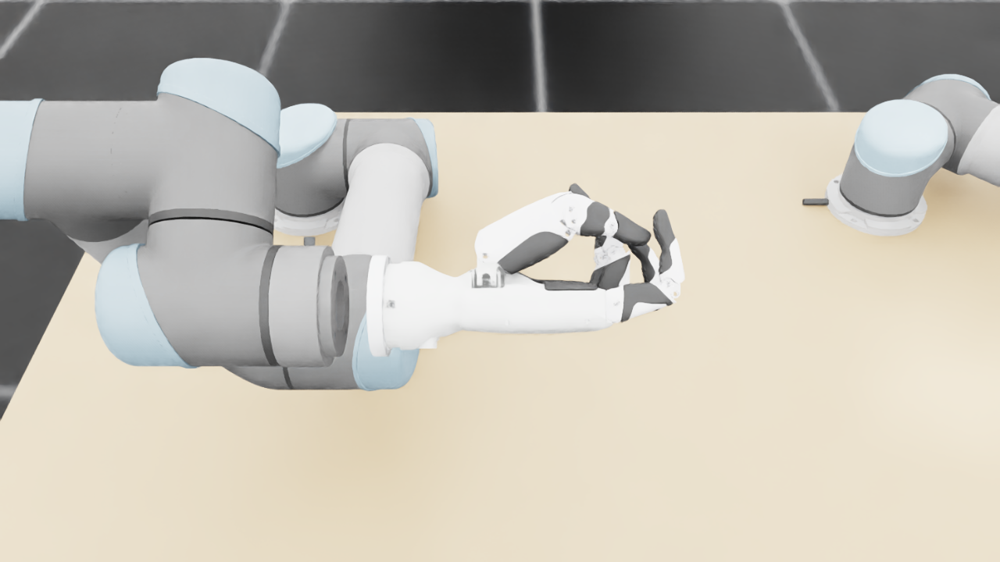
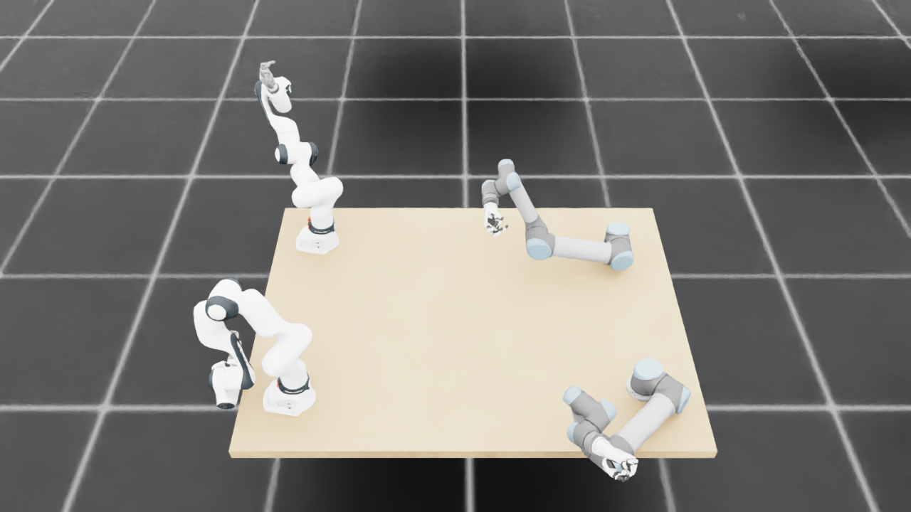
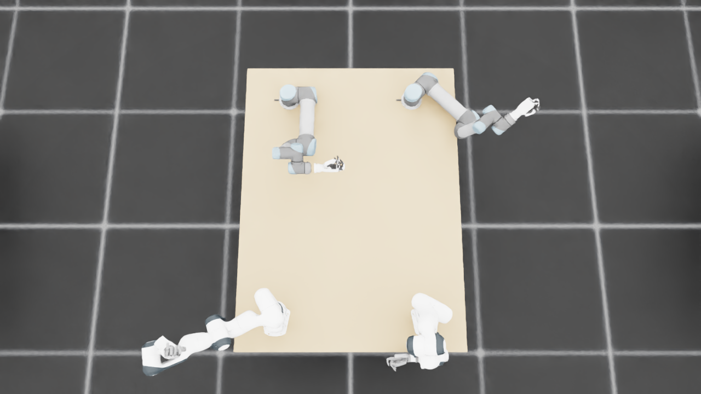
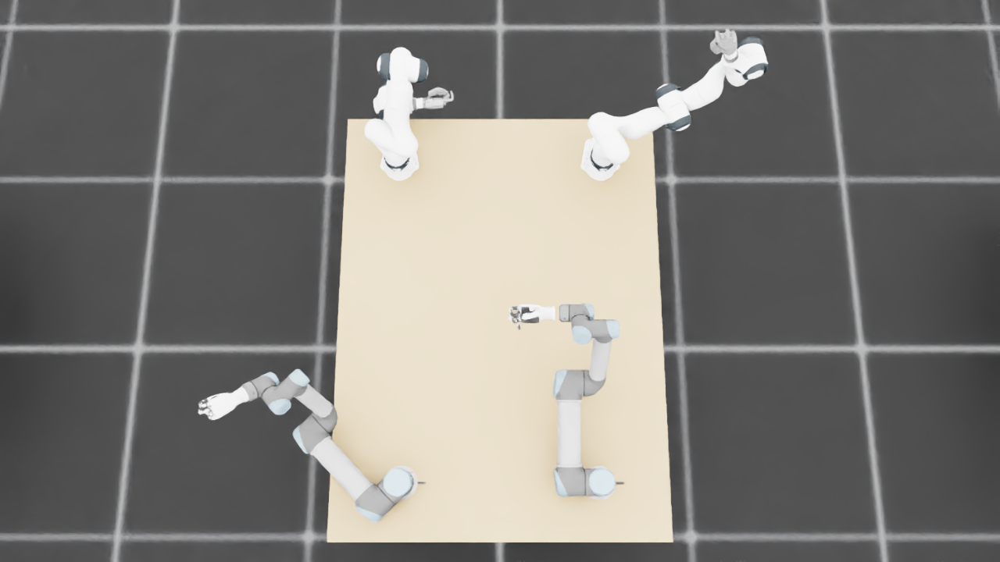
{
"qualified": true,
"arms": {
"F_L": {
"qualified": true,
"palm_visual_peak_pixels": 17934,
"finger_family_peak_pixels": {
"thumb": 7886,
"index": 4000,
"middle": 5216,
"ring": 4363,
"little": 4220
},
"per_native_body_peak_pixels": {
"/World/envs/env_2/F_L/f2_hand/left_hand_base": 26314,
"/World/envs/env_2/F_L/f2_hand/left_index_1": 2440,
"/World/envs/env_2/F_L/f2_hand/left_middle_1": 2547,
"/World/envs/env_2/F_L/f2_hand/left_pinky_1": 2652,
"/World/envs/env_2/F_L/f2_hand/left_ring_1": 2294,
"/World/envs/env_2/F_L/f2_hand/left_thumb_1": 701,
"/World/envs/env_2/F_L/f2_hand/left_index_2": 1560,
"/World/envs/env_2/F_L/f2_hand/left_middle_2": 2669,
"/World/envs/env_2/F_L/f2_hand/left_pinky_2": 1568,
"/World/envs/env_2/F_L/f2_hand/left_ring_2": 2069,
"/World/envs/env_2/F_L/f2_hand/left_thumb_2": 4384,
"/World/envs/env_2/F_L/f2_hand/left_thumb_3": 1695,
"/World/envs/env_2/F_L/f2_hand/left_thumb_4": 1267
},
"native_body_visibility_gaps": [],
"all_native_hand_bodies_observed": true,
"full_mesh_coverage_certified": false,
"all_recorded_attempt_peak": {
"qualified": false,
"palm_visual_peak_pixels": 27890,
"finger_family_peak_pixels": {
"thumb": 9253,
"index": 4675,
"middle": 5216,
"ring": 4363,
"little": 4220
},
"per_native_body_peak_pixels": {
"/World/envs/env_2/F_L/f2_hand/left_hand_base": 33686,
"/World/envs/env_2/F_L/f2_hand/left_index_1": 2981,
"/World/envs/env_2/F_L/f2_hand/left_middle_1": 2547,
"/World/envs/env_2/F_L/f2_hand/left_pinky_1": 2652,
"/World/envs/env_2/F_L/f2_hand/left_ring_1": 2363,
"/World/envs/env_2/F_L/f2_hand/left_thumb_1": 712,
"/World/envs/env_2/F_L/f2_hand/left_index_2": 1694,
"/World/envs/env_2/F_L/f2_hand/left_middle_2": 2669,
"/World/envs/env_2/F_L/f2_hand/left_pinky_2": 1568,
"/World/envs/env_2/F_L/f2_hand/left_ring_2": 2069,
"/World/envs/env_2/F_L/f2_hand/left_thumb_2": 5393,
"/World/envs/env_2/F_L/f2_hand/left_thumb_3": 2158,
"/World/envs/env_2/F_L/f2_hand/left_thumb_4": 1520
},
"native_body_visibility_gaps": [],
"all_native_hand_bodies_observed": true,
"full_mesh_coverage_certified": false,
"qualification": false
},
"attempts": 7,
"decoded": 7
},
"F_R": {
"qualified": true,
"palm_visual_peak_pixels": 28956,
"finger_family_peak_pixels": {
"thumb": 12228,
"index": 6543,
"middle": 3373,
"ring": 2669,
"little": 5948
},
"per_native_body_peak_pixels": {
"/World/envs/env_2/F_R/f2_hand/right_hand_base": 37316,
"/World/envs/env_2/F_R/f2_hand/right_index_1": 4087,
"/World/envs/env_2/F_R/f2_hand/right_middle_1": 1077,
"/World/envs/env_2/F_R/f2_hand/right_pinky_1": 3631,
"/World/envs/env_2/F_R/f2_hand/right_ring_1": 627,
"/World/envs/env_2/F_R/f2_hand/right_thumb_1": 1113,
"/World/envs/env_2/F_R/f2_hand/right_index_2": 2456,
"/World/envs/env_2/F_R/f2_hand/right_middle_2": 2660,
"/World/envs/env_2/F_R/f2_hand/right_pinky_2": 2317,
"/World/envs/env_2/F_R/f2_hand/right_ring_2": 2167,
"/World/envs/env_2/F_R/f2_hand/right_thumb_2": 6681,
"/World/envs/env_2/F_R/f2_hand/right_thumb_3": 2699,
"/World/envs/env_2/F_R/f2_hand/right_thumb_4": 1966
},
"native_body_visibility_gaps": [],
"all_native_hand_bodies_observed": true,
"full_mesh_coverage_certified": false,
"all_recorded_attempt_peak": {
"qualified": false,
"palm_visual_peak_pixels": 35798,
"finger_family_peak_pixels": {
"thumb": 12228,
"index": 6543,
"middle": 5323,
"ring": 3742,
"little": 5948
},
"per_native_body_peak_pixels": {
"/World/envs/env_2/F_R/f2_hand/right_hand_base": 43315,
"/World/envs/env_2/F_R/f2_hand/right_index_1": 4087,
"/World/envs/env_2/F_R/f2_hand/right_middle_1": 2381,
"/World/envs/env_2/F_R/f2_hand/right_pinky_1": 3631,
"/World/envs/env_2/F_R/f2_hand/right_ring_1": 1410,
"/World/envs/env_2/F_R/f2_hand/right_thumb_1": 1113,
"/World/envs/env_2/F_R/f2_hand/right_index_2": 2456,
"/World/envs/env_2/F_R/f2_hand/right_middle_2": 2942,
"/World/envs/env_2/F_R/f2_hand/right_pinky_2": 2317,
"/World/envs/env_2/F_R/f2_hand/right_ring_2": 3083,
"/World/envs/env_2/F_R/f2_hand/right_thumb_2": 6681,
"/World/envs/env_2/F_R/f2_hand/right_thumb_3": 3101,
"/World/envs/env_2/F_R/f2_hand/right_thumb_4": 2238
},
"native_body_visibility_gaps": [],
"all_native_hand_bodies_observed": true,
"full_mesh_coverage_certified": false,
"qualification": false
},
"attempts": 8,
"decoded": 8
},
"U_L": {
"qualified": true,
"palm_visual_peak_pixels": 9059,
"finger_family_peak_pixels": {
"thumb": 8460,
"index": 3841,
"middle": 2335,
"ring": 1602,
"little": 2849
},
"per_native_body_peak_pixels": {
"/World/envs/env_2/U_L/wrist_3_link": 30121,
"/World/envs/env_2/U_L/left_index_1": 2346,
"/World/envs/env_2/U_L/left_little_1": 1591,
"/World/envs/env_2/U_L/left_middle_1": 1499,
"/World/envs/env_2/U_L/left_ring_1": 395,
"/World/envs/env_2/U_L/left_thumb_1": 435,
"/World/envs/env_2/U_L/left_index_2": 1495,
"/World/envs/env_2/U_L/left_little_2": 1258,
"/World/envs/env_2/U_L/left_middle_2": 1269,
"/World/envs/env_2/U_L/left_ring_2": 1298,
"/World/envs/env_2/U_L/left_thumb_2": 5159,
"/World/envs/env_2/U_L/left_thumb_3": 1899,
"/World/envs/env_2/U_L/left_thumb_4": 967
},
"native_body_visibility_gaps": [],
"all_native_hand_bodies_observed": true,
"full_mesh_coverage_certified": false,
"all_recorded_attempt_peak": {
"qualified": true,
"palm_visual_peak_pixels": 9059,
"finger_family_peak_pixels": {
"thumb": 8460,
"index": 3841,
"middle": 2335,
"ring": 1602,
"little": 2849
},
"per_native_body_peak_pixels": {
"/World/envs/env_2/U_L/wrist_3_link": 30802,
"/World/envs/env_2/U_L/left_index_1": 2346,
"/World/envs/env_2/U_L/left_little_1": 1591,
"/World/envs/env_2/U_L/left_middle_1": 1499,
"/World/envs/env_2/U_L/left_ring_1": 573,
"/World/envs/env_2/U_L/left_thumb_1": 435,
"/World/envs/env_2/U_L/left_index_2": 1495,
"/World/envs/env_2/U_L/left_little_2": 1258,
"/World/envs/env_2/U_L/left_middle_2": 1269,
"/World/envs/env_2/U_L/left_ring_2": 1298,
"/World/envs/env_2/U_L/left_thumb_2": 5159,
"/World/envs/env_2/U_L/left_thumb_3": 1899,
"/World/envs/env_2/U_L/left_thumb_4": 967
},
"native_body_visibility_gaps": [],
"all_native_hand_bodies_observed": true,
"full_mesh_coverage_certified": false,
"qualification": false
},
"attempts": 4,
"decoded": 4
},
"U_R": {
"qualified": true,
"palm_visual_peak_pixels": 12019,
"finger_family_peak_pixels": {
"thumb": 12841,
"index": 5925,
"middle": 3166,
"ring": 4206,
"little": 5854
},
"per_native_body_peak_pixels": {
"/World/envs/env_2/U_R/wrist_3_link": 50256,
"/World/envs/env_2/U_R/right_index_1": 3383,
"/World/envs/env_2/U_R/right_little_1": 3640,
"/World/envs/env_2/U_R/right_middle_1": 1688,
"/World/envs/env_2/U_R/right_ring_1": 1600,
"/World/envs/env_2/U_R/right_thumb_1": 701,
"/World/envs/env_2/U_R/right_index_2": 2542,
"/World/envs/env_2/U_R/right_little_2": 2214,
"/World/envs/env_2/U_R/right_middle_2": 2458,
"/World/envs/env_2/U_R/right_ring_2": 2606,
"/World/envs/env_2/U_R/right_thumb_2": 7777,
"/World/envs/env_2/U_R/right_thumb_3": 3241,
"/World/envs/env_2/U_R/right_thumb_4": 1443
},
"native_body_visibility_gaps": [],
"all_native_hand_bodies_observed": true,
"full_mesh_coverage_certified": false,
"all_recorded_attempt_peak": {
"qualified": false,
"palm_visual_peak_pixels": 17867,
"finger_family_peak_pixels": {
"thumb": 12841,
"index": 5925,
"middle": 3455,
"ring": 4206,
"little": 5854
},
"per_native_body_peak_pixels": {
"/World/envs/env_2/U_R/wrist_3_link": 71376,
"/World/envs/env_2/U_R/right_index_1": 3455,
"/World/envs/env_2/U_R/right_little_1": 3640,
"/World/envs/env_2/U_R/right_middle_1": 1688,
"/World/envs/env_2/U_R/right_ring_1": 2684,
"/World/envs/env_2/U_R/right_thumb_1": 712,
"/World/envs/env_2/U_R/right_index_2": 2542,
"/World/envs/env_2/U_R/right_little_2": 2214,
"/World/envs/env_2/U_R/right_middle_2": 2458,
"/World/envs/env_2/U_R/right_ring_2": 2606,
"/World/envs/env_2/U_R/right_thumb_2": 7777,
"/World/envs/env_2/U_R/right_thumb_3": 3241,
"/World/envs/env_2/U_R/right_thumb_4": 1596
},
"native_body_visibility_gaps": [],
"all_native_hand_bodies_observed": true,
"full_mesh_coverage_certified": false,
"qualification": false
},
"attempts": 8,
"decoded": 8
}
},
"wide": {
"qualified": true,
"per_native_object_peak_pixels": {
"/World/envs/env_2/F_L/fr3_link0": 2012,
"/World/envs/env_2/F_L/fr3_link1": 2067,
"/World/envs/env_2/F_L/fr3_link2": 2700,
"/World/envs/env_2/F_L/fr3_link3": 1717,
"/World/envs/env_2/F_L/fr3_link4": 2051,
"/World/envs/env_2/F_L/fr3_link5": 2887,
"/World/envs/env_2/F_L/fr3_link6": 1074,
"/World/envs/env_2/F_L/fr3_link7": 635,
"/World/envs/env_2/F_L/fr3_link8": 105,
"/World/envs/env_2/F_L/f2_hand/left_hand_base": 538,
"/World/envs/env_2/F_L/f2_hand/left_index_1": 39,
"/World/envs/env_2/F_L/f2_hand/left_middle_1": 41,
"/World/envs/env_2/F_L/f2_hand/left_pinky_1": 68,
"/World/envs/env_2/F_L/f2_hand/left_ring_1": 23,
"/World/envs/env_2/F_L/f2_hand/left_thumb_1": 18,
"/World/envs/env_2/F_L/f2_hand/left_index_2": 81,
"/World/envs/env_2/F_L/f2_hand/left_middle_2": 66,
"/World/envs/env_2/F_L/f2_hand/left_pinky_2": 70,
"/World/envs/env_2/F_L/f2_hand/left_ring_2": 86,
"/World/envs/env_2/F_L/f2_hand/left_thumb_2": 82,
"/World/envs/env_2/F_L/f2_hand/left_thumb_3": 42,
"/World/envs/env_2/F_L/f2_hand/left_thumb_4": 47,
"/World/envs/env_2/F_R/fr3_link0": 2769,
"/World/envs/env_2/F_R/fr3_link1": 2898,
"/World/envs/env_2/F_R/fr3_link2": 2616,
"/World/envs/env_2/F_R/fr3_link3": 3493,
"/World/envs/env_2/F_R/fr3_link4": 1976,
"/World/envs/env_2/F_R/fr3_link5": 3164,
"/World/envs/env_2/F_R/fr3_link6": 1439,
"/World/envs/env_2/F_R/fr3_link7": 178,
"/World/envs/env_2/F_R/fr3_link8": 79,
"/World/envs/env_2/F_R/f2_hand/right_hand_base": 497,
"/World/envs/env_2/F_R/f2_hand/right_index_1": 68,
"/World/envs/env_2/F_R/f2_hand/right_middle_1": 30,
"/World/envs/env_2/F_R/f2_hand/right_pinky_1": 8,
"/World/envs/env_2/F_R/f2_hand/right_ring_1": 7,
"/World/envs/env_2/F_R/f2_hand/right_thumb_1": 8,
"/World/envs/env_2/F_R/f2_hand/right_index_2": 50,
"/World/envs/env_2/F_R/f2_hand/right_middle_2": 50,
"/World/envs/env_2/F_R/f2_hand/right_pinky_2": 14,
"/World/envs/env_2/F_R/f2_hand/right_ring_2": 29,
"/World/envs/env_2/F_R/f2_hand/right_thumb_2": 108,
"/World/envs/env_2/F_R/f2_hand/right_thumb_3": 53,
"/World/envs/env_2/F_R/f2_hand/right_thumb_4": 40,
"/World/envs/env_2/U_L/base_link": 397,
"/World/envs/env_2/U_L/shoulder_link": 1835,
"/World/envs/env_2/U_L/upper_arm_link": 5562,
"/World/envs/env_2/U_L/forearm_link": 2427,
"/World/envs/env_2/U_L/wrist_1_link": 1381,
"/World/envs/env_2/U_L/wrist_2_link": 984,
"/World/envs/env_2/U_L/wrist_3_link": 1472,
"/World/envs/env_2/U_L/left_index_1": 146,
"/World/envs/env_2/U_L/left_little_1": 65,
"/World/envs/env_2/U_L/left_middle_1": 111,
"/World/envs/env_2/U_L/left_ring_1": 60,
"/World/envs/env_2/U_L/left_thumb_1": 16,
"/World/envs/env_2/U_L/left_index_2": 75,
"/World/envs/env_2/U_L/left_little_2": 10,
"/World/envs/env_2/U_L/left_middle_2": 116,
"/World/envs/env_2/U_L/left_ring_2": 38,
"/World/envs/env_2/U_L/left_thumb_2": 262,
"/World/envs/env_2/U_L/left_thumb_3": 95,
"/World/envs/env_2/U_L/left_thumb_4": 64,
"/World/envs/env_2/U_R/base_link": 277,
"/World/envs/env_2/U_R/shoulder_link": 1258,
"/World/envs/env_2/U_R/upper_arm_link": 5520,
"/World/envs/env_2/U_R/forearm_link": 2512,
"/World/envs/env_2/U_R/wrist_1_link": 934,
"/World/envs/env_2/U_R/wrist_2_link": 682,
"/World/envs/env_2/U_R/wrist_3_link": 984,
"/World/envs/env_2/U_R/right_index_1": 63,
"/World/envs/env_2/U_R/right_little_1": 25,
"/World/envs/env_2/U_R/right_middle_1": 41,
"/World/envs/env_2/U_R/right_ring_1": 47,
"/World/envs/env_2/U_R/right_thumb_1": 10,
"/World/envs/env_2/U_R/right_index_2": 58,
"/World/envs/env_2/U_R/right_little_2": 38,
"/World/envs/env_2/U_R/right_middle_2": 41,
"/World/envs/env_2/U_R/right_ring_2": 58,
"/World/envs/env_2/U_R/right_thumb_2": 153,
"/World/envs/env_2/U_R/right_thumb_3": 69,
"/World/envs/env_2/U_R/right_thumb_4": 32,
"/World/envs/env_2/TableF": 102182,
"/World/envs/env_2/TableU": 107738
},
"arm_peak_pixels": {
"F_L": 13732,
"F_R": 18404,
"U_L": 14105,
"U_R": 12506
},
"table_peak_pixels": {
"TableF": 102182,
"TableU": 107738
},
"critical_body_peak_pixels": {
"/World/envs/env_2/U_L/forearm_link": 2427,
"/World/envs/env_2/U_L/wrist_2_link": 984,
"/World/envs/env_2/U_R/forearm_link": 2512,
"/World/envs/env_2/U_R/wrist_2_link": 682
}
},
"raw_attempt_count": 41,
"PNG_count": 41,
"angle_records": 41,
"max_actual_angle_identity_error_deg": 0.0,
"held_snapshot_checks": 862,
"universal_visibility_impossible": false,
"full_mesh_coverage_certified": false
}